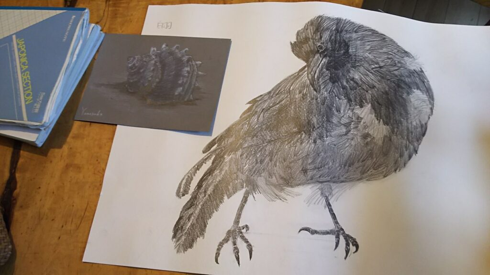
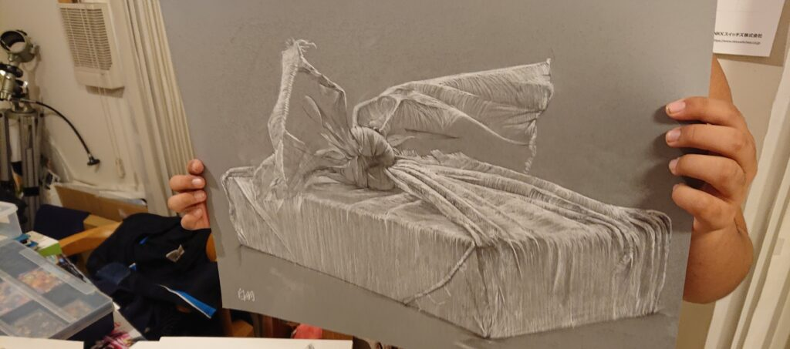
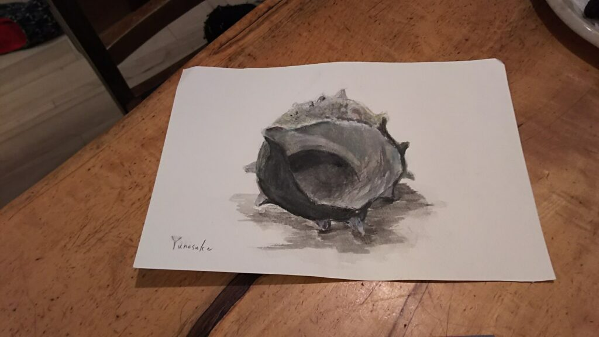
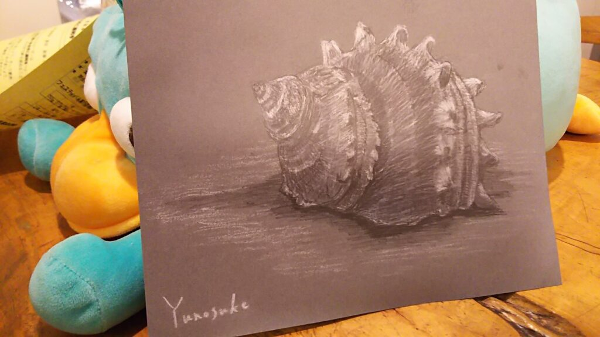

DAIZENメソッド美しさのヒミツ（その2）

DAIZENメソッド美しさのヒミツのその2です。
写真の絵は、DAIZENメンバーで技術スタッフリーダーの白羽優之介が鉛筆で3時間以内でデッサンした作品です。
その1でお話ししたアート感覚、芸術的感性の一歩踏み込んだヒミツをお伝えします。この感性とはズバリ『光』『光源』『反射』『輝度』を読み取るチカラについての感性の事です。このチカラについて修練、習得するために私どもは生き物、動植物といった自然界の美しさを用いてトレーニングしております。絵を描く、クワガタを飼育して光沢を観察する、アクアリウムを作り美しい魚介類をつぶさに観察するなどのトレーニングをしております。
光とはとても不思議な物質です。明るい光を表現するには、光の薄いエリア、光の当たらない影のエリアをまず描かないと表現出来ません。このコトに気付くと、如何に効果的に影を創るか、が、如何に効果的に光らせるか、に結び付く事が解ります。その光を受けた（反射された）物質が、直線的に構成されたカタチなのか、曲線を伴う構成のカタチなのか、それらのカタチが反射する光の美しさを決定付けます。窓ガラスクリーニングでガラスの透明感をどこまでも追求するとき、キッチンのシンクや水道の銀色に輝くクロームの光沢感をどこまで出すかを判断するとき、浴室で、洗面台で、鏡で、あらゆるシーンでこの光沢感の使いこなし、反射する輝きの判断スキルが断然必要になります!
全て万物は色を保有しております。色の正体は「光が放つ波長」です。暖かい色、寒い色、冷たい色、熱い色、温度までも人間の感性は光から瞬時に感じ取ります。万物は「有機物と無機物」あるいは「アナログとデジタル」というジャンルに区分けされます。それらの双方の性質から、多くを学んでおります。
例えば、私どもが精魂込めてクリーニングする多くの対象物の素材は「無機物」で出来ておりますが、その反面DAIZENプロフェッショナルメソッドで使用する清掃ツールの多くは有機物（生物由来）で出来ております。例として、豚毛ブラシ、ウールの刷毛、木綿のウエス、水ヤスリ、各ツールのあちこちに木製器具が使われています。
これらの「無機物と有機物」を「アナログ的な感性と的確なデジタル感性」で調和させてハーモニーを産出させます。「生き物」「動植物」「自然界」を先生に私どもは日々トレーニングを続けております。



